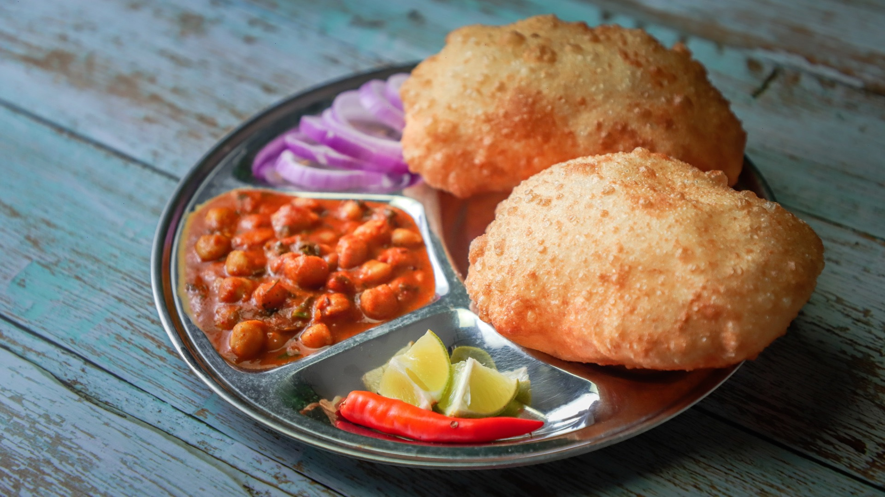

Chole Bhature

Back
Description
You may have heard of Chana masala, or chickpeas in a curry sauce. This dish is also known as Chole, and when served with the crispy deep fried quick bread known as bhature, the dish becomes Chole Bhature.
Rich with garlic, ginger, and usually cooked with a plethora of Indian spices for multi-layered flavor, chole bhature is also easy to pare down to the basics for a quick weeknight meal.
Main Ingredients (serves 2)
- 1 can chickpeas
- 2 short cinnamon sticks
- Black tea bag
- Green cardamom pods
- 1 large onion, diced
- 1 tbsp garlic paste
- 1 tbsp ginger paste
- 1 tbsp garam masala powder
- 1 tbsp amchur powder
- Turmeric powder
- Red kashmiri chili powder
- 1 tbsp kasuri methi (to add at end)
Ingredients for Bhature
- 1 cup bread flour
- Sugar
- Salt
- Baking powder
- Baking soda
- Yoghurt
- Oil
- Water
- ~4 cups Oil for frying
Steps
For bhature
- Mix all bhature ingredients in a large bowl until shaggy dough is formed
- Knead dough until it forms a smooth ball
- Cover and rest for at least 30 minutes
- Form into 6-8 small balls
- Roll each ball into a flat disk about 6" or 7" in diameter
- Place frying oil into pot over high heat
- Place into hot oil and watch the bhature puff like a balloon!
- fry until golden brown (about 1 minute per side)
For chole masala
- Add chickpeas with chickpea water, cinnamon stick, cardamom pods and tea bag to a pot
- Simmer until chickpeas are soft enough to squish between fingers, then remove from heat
- While chickpeas simmer, to hot oil in a large frypan add cinnamon stick, jeera seeds, and cardamom pods
- Once fragrant add garlic and ginger paste
- Once garlic and ginger paste begins to change color add minced onion
- Once onion becomes golden around edges, add powder spices
- Stir briefly, then add tomatoes
- Cook until tomatoes have lost their shape and oil separates from masala
- Add chickpeas and water
- Simmer for 15-30 minutes (perfect time to cook the bhature!)
- In final 5 minutes of simmering, crush kasuri methi between hands and add to pot
- Serve with red onion, lemon or lime, chili, and of course bhature!